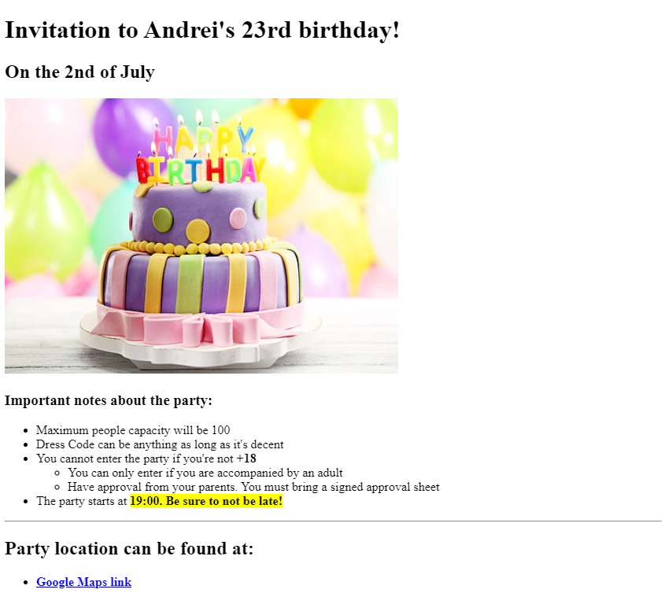
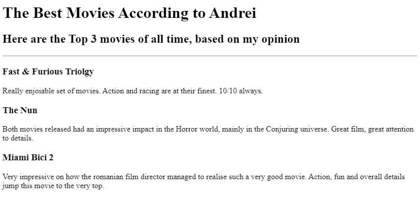

Welcome to my Web Development Portfolio!
Below, you can find some of my work :)
-
First project, an invitation to my Birthday party. You can click on the screenshot in order to access the page.

-
Second project, the top-ranking movies according to my taste. You can click on the screenshot in order to access the page.

Personal Info: